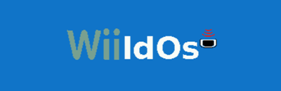
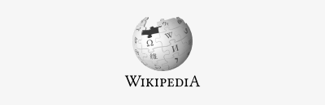
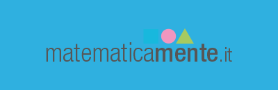

WiiLDOS è una distribuzione Linux fatta da e per i docenti, che include applicazioni e contenuti specifici per la didattica. E' supportata dall'omonimo gruppo WiiLD, una mailing list di 1000 iscritti tra insegnanti e tecnici che quotidianamente scambiano riferimenti e notizie, recensiscono nuovi programmi e siti di risorse online, e si danno reciproco supporto.

Scratch è un riferimento imprescindibile quando si parla di insegnamento della programmazione. Il facile editor visuale permette di costruire semplici giochi incastrando tra loro i costrutti logici di base, fornendo un immediato ed intuitivo feedback. Sviluppato dal MIT di Boston, conta una community di migliaia di utenti nel mondo.

Wikipedia non è solo la più grande enciclopedia al mondo ma, per mezzo delle sue piattaforme parallele, un inesauribile collettore di contenuti: testi, immagini, foto, libri, dati, tutti disponibili in licenza aperta e dunque usabili in ogni circostanza. L'immensa community di supporto, cui partecipano anche esperti di tutti i settori - nonché, ovviamente, studenti ed insegnanti - provvede a verificare e validare velocemente ogni informazione pubblicata.

La collana C3 raccoglie diversi libri per la scuola, tutti realizzati in modo collaborativo da una ampia rete di insegnanti e distribuiti in licenza Creative Commons. I testi possono essere scaricati, all'occorrenza modificati, e consultati in formato digitale oppure stampati a basso costo presso la più vicina stamperia.